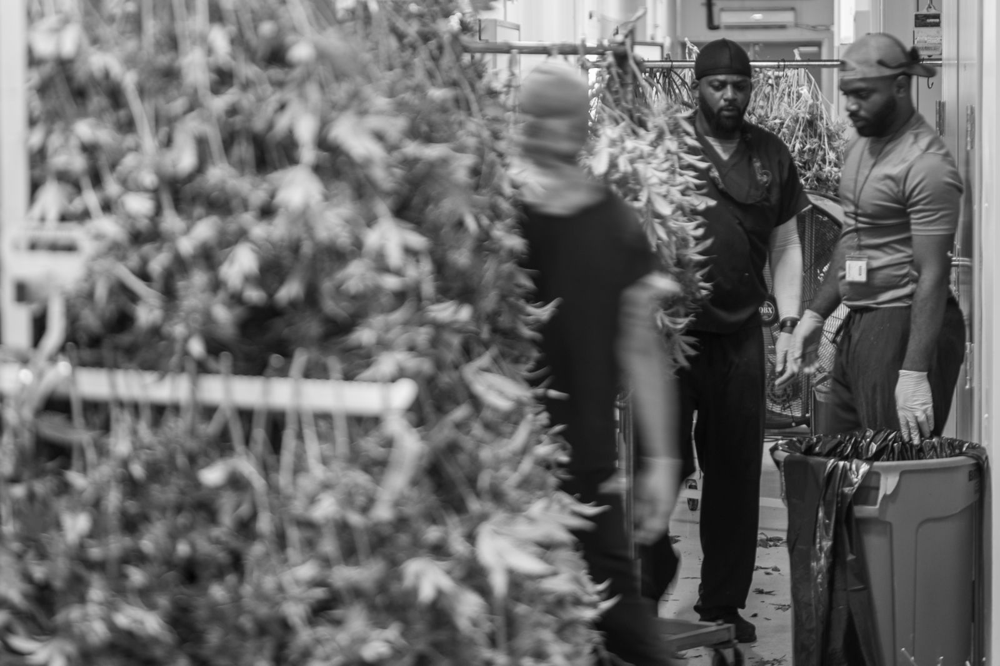
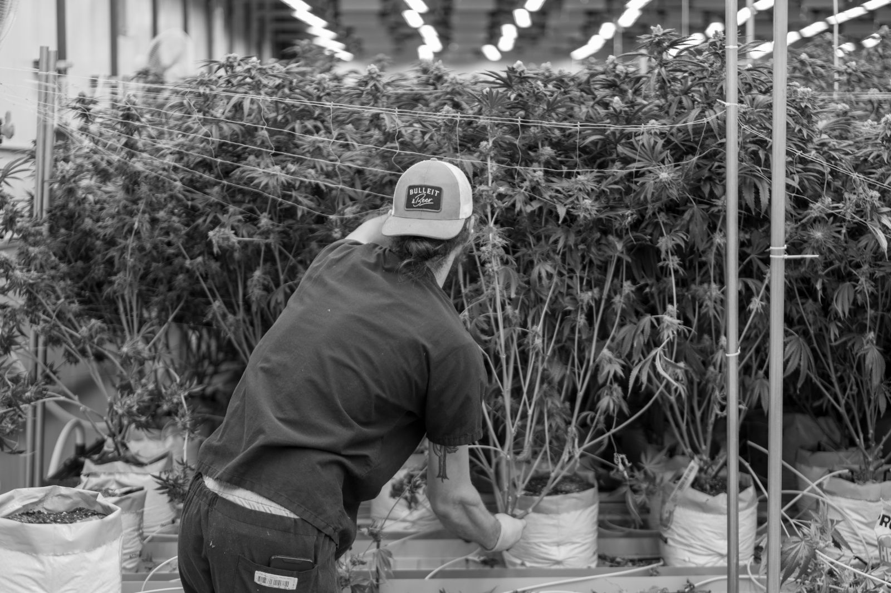
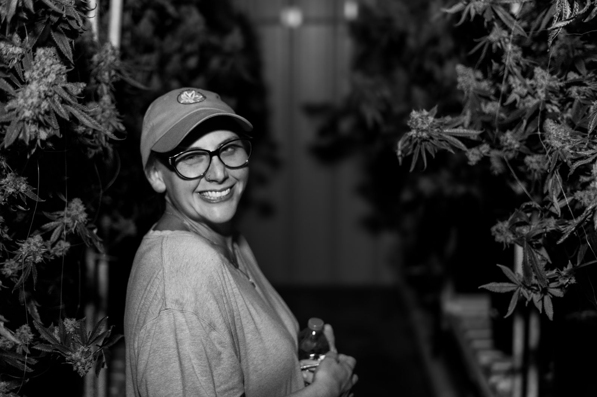
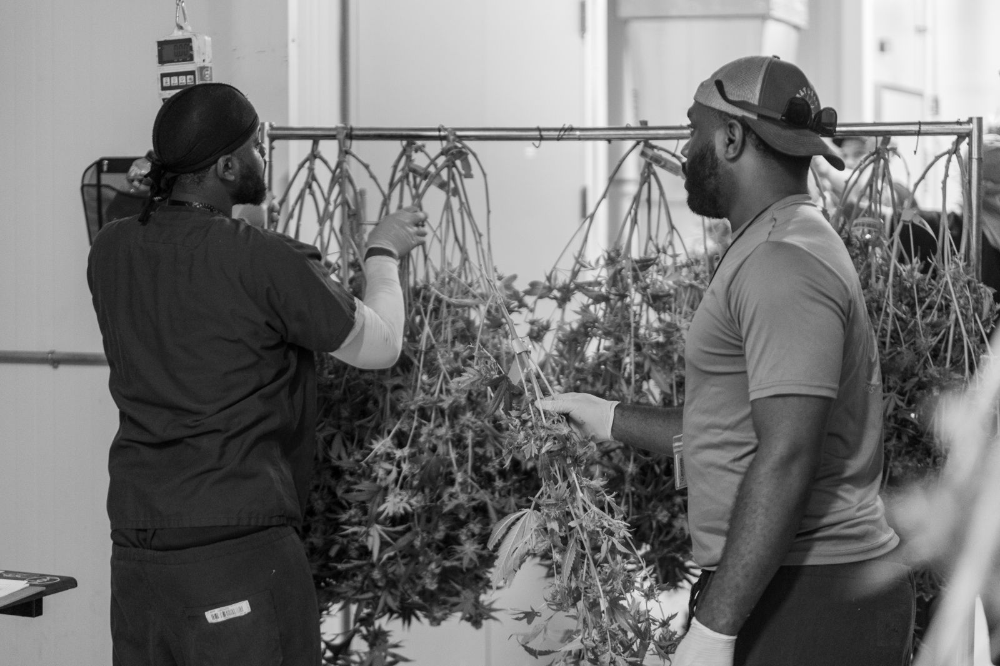
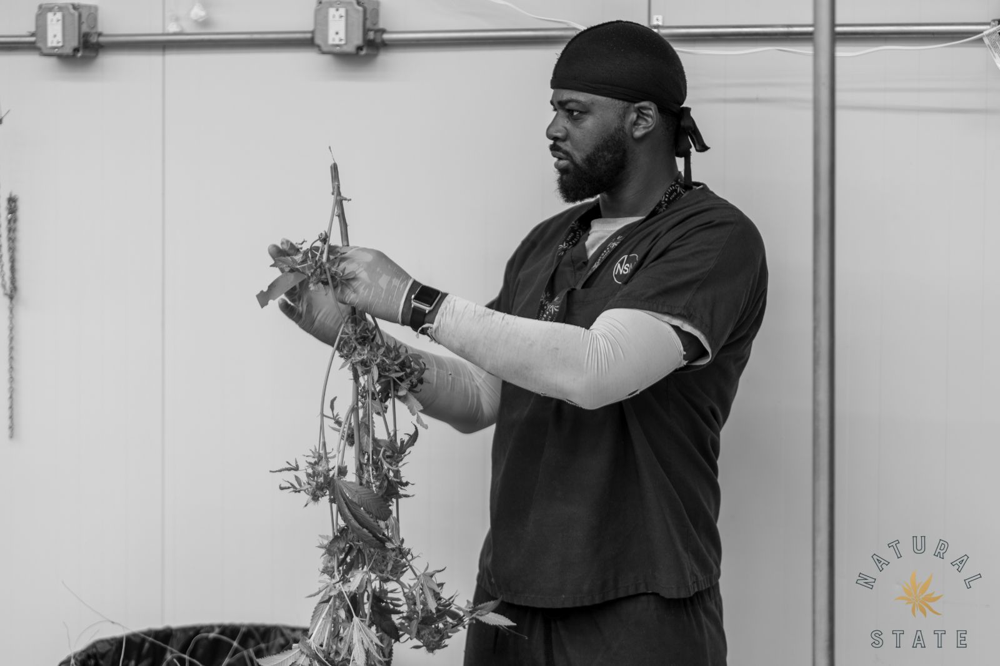
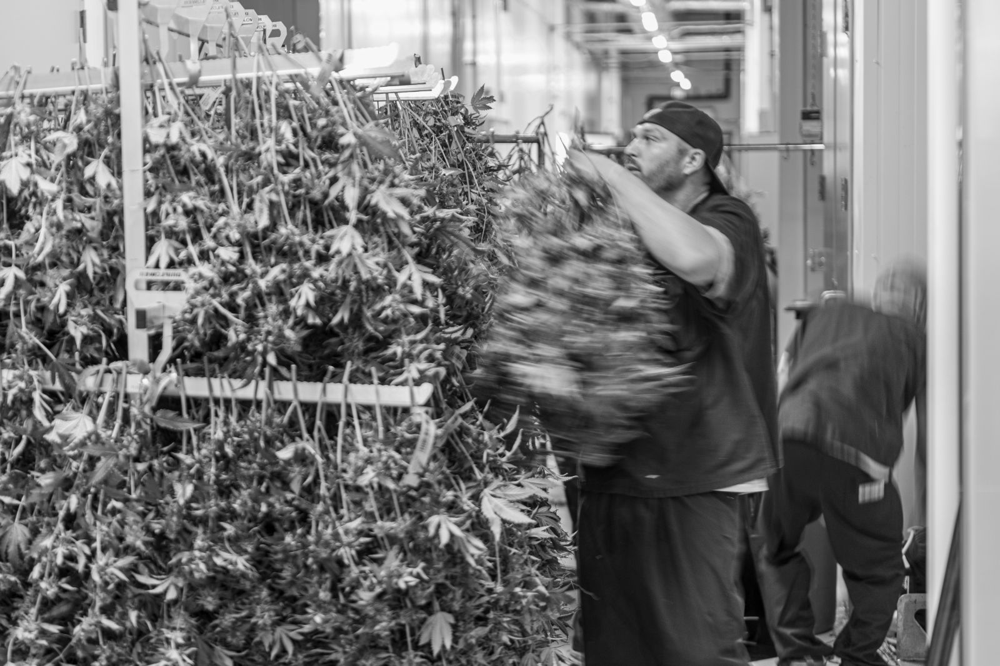
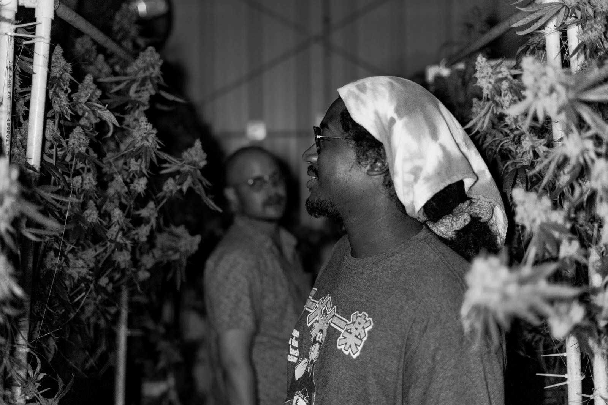
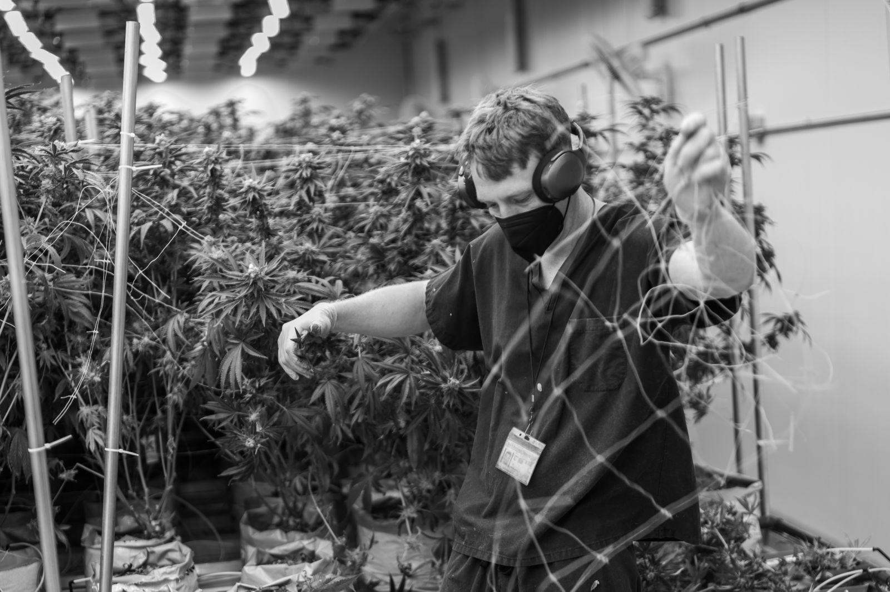

Natural State Medicinals
About us
Natural State Medicinals
About us
The people who grew it.
You will probably never meet us. We are not the shop where you pick up your medicine. We are the room it came from: a cultivation and manufacturing facility in Arkansas, staffed by people who live here, growing for patients who live here.
So this page is the next best thing to a tour.
The slow way, on purpose
A room comes down all at once. Plants come off the bench whole and go up on the rack in one piece, because breaking a plant down wet costs you the smell.
A machine trimmer is faster and it is cheaper. Ours is hand work, plant by plant. Then the dry room, slow and cool and dark, which is the part nobody sees. Rush it and the flower is ruined in a way no label will tell you. You only find out when you open the jar.


Everybody who can be on the floor is on the floor.
This is a staff, not a season.
Growers, trimmers, extraction techs, kitchen staff, packaging, compliance, delivery. Veterans. Mothers. People on their second career and people on their first job out of school. Trained, paid, badged, and here every day.
Most of them are patients themselves, or related to one, which is a better quality control department than any policy we could write. Somebody looked at every branch that ends up in a jar with your name on the label.
The whole crew






All photographs from one harvest. Other rooms and departments to come.
We love our plants, our people, and our patients, in that order, and all at once.